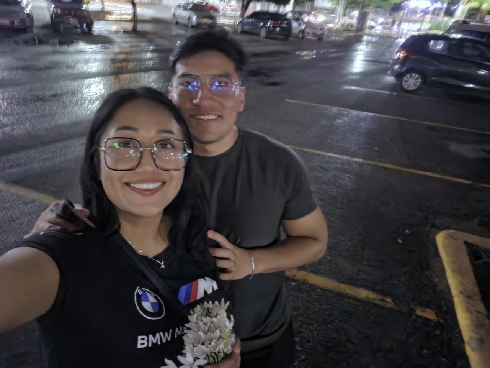
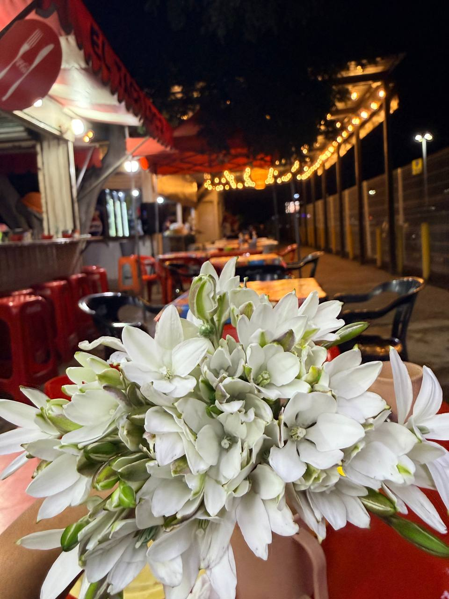
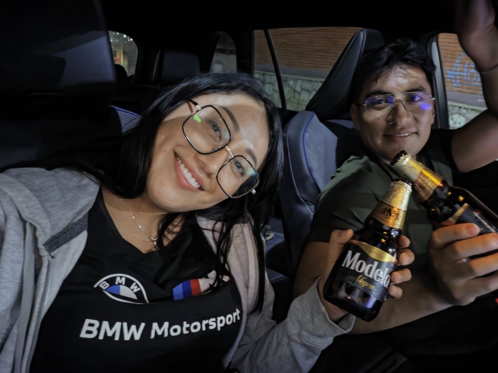

commit 0024 Date: 23 Jun 2026 🟡 Momentos Simples 🟢 Git Message feat: simple moments became meaningful ⚪ Story A veces los días más bonitos no tienen nada extraordinario. Ese día te acompañé a Liverpool a comprar una camisa. Había llovido y anduvimos un rato por la plaza, haciendo nuestras cosas, sin demasiados planes. Hasta que aparecieron unas azucenas. De esas flores que huelen increíble. Yo compré unas. Tú compraste otras y me las regalaste. Después fuimos por unos taquitos, tomamos un café y seguimos nuestra noche como si todavía no tuviéramos prisa por terminarla. Como siempre, hicimos nuestro clásico piedra, papel o tijera para decidir quién manejaba. Esta vez me tocó a mí. Y ahí llegó mi momento de pánico. 😂 Al llegar a tu casa, no calculé bien dónde tenía que estacionarme y, en lugar de quedar sobre la parte alta donde debía estar, me fui hacia la parte baja y caí en la banqueta. No pasó nada grave, pero yo sí entré en crisis. No era mi carro. Era tu camioneta. Y además era nueva. Entre los dos logramos sacarla y, por fortuna, todo quedó en un susto. Pero yo seguía sintiéndome fatal. Así que, en lugar de terminar la noche ahí, fuimos por una cerveza al Oxxo y nos quedamos en la camioneta. Tú ponías una canción. Yo ponía otra. Cantábamos. Platicábamos. A veces simplemente nos quedábamos en silencio. Y así, sin darnos cuenta, se nos fue pasando la noche. No hicimos nada extraordinario. Solo estábamos ahí. Y creo que justamente eso es lo que hace especial este recuerdo. Porque no con cualquier persona puedes pasar tanto tiempo haciendo prácticamente nada y sentir que, aun así, la estás pasando bien. Hay personas con las que necesitas estar haciendo algo para no aburrirte. Contigo no. Contigo hasta una cerveza en una camioneta, canciones, una conversación y algunos silencios podían convertirse en una noche que se disfrutaba sin necesidad de hacer mucho. 🟣 Developer Notes Azucenas successfully acquired. New vehicle: briefly tested. 😂 Damage: none. Night extended successfully. Comfort level: quietly confirmed. Simple moment archived. 🟢 Impact on Project + Another ordinary day documented. + Shared comfort level preserved. + New inside memory unlocked. + Simple moments continue becoming meaningful. 🟢 Commit Status ✔ Completed ✔ Reviewed ✔ Ready for Release
🖼 Recuerdos

Deli😋

Que bien nos vemos sonriendo 😀

Antes de la tragedia 🥲

Momentos simples que son especiales.
1 / 4
⬅ Regresar al Commit History